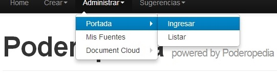
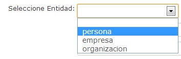
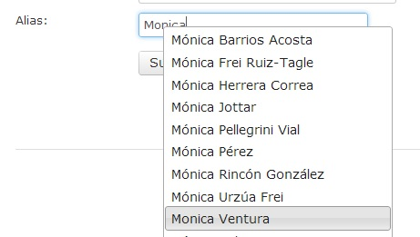

The front page of Poderopedia (Fig.36) consists of THREE FEATURED NEWS: A major and two minor. The featured news is ordered according to the time of entry. The main featured new will be the last entered. If you add another new, the main featured new will pass to be the second featured new.
(Fig.36)
1. - To manage the front page of Poderopedia you must enter the Administration Menu and Select Manage Home. The Home menu is displayed with the following options: Login (a new top cover) and List (to edit an already entered new) (Fig. 37)
(Fig. 37)

2. - To add a new featured new to the front page you have to select the option 'add' (Fig. 38).
(Fig. 38)

The Featured new form will be displayed. Complete the form (like in number 4). (Fig. 39).
(Fig.39)

4. - You will have to fill the form of Fig.40 the following way:
|
FrontPage Picture size: 454 x 296 Pixels. File Format JPG or PNG |
|
Front page head title |
|
Tag. |
|
Content. |
|
Date and time. |
|
URL. Automatic filled field |
 |
Choose an Entity. You can choose Person, Company or Organization |
|
Reference. Automatic filled field |
 |
Alias. Short name or alias of the Entity chooses. |
|
Submit. |
5. - Edit the featured cover story. To edit the featured cover story you have to go to Menu Manage, select Home and then List. (Fig. 41).
(Fig. 41)

6. - A grid will be displayed (Fig. 42) containing the list of featured news. There, you will be able to:
View ,
Edit
,
Edit  or
delete
or
delete .
.
(Fig. 42)